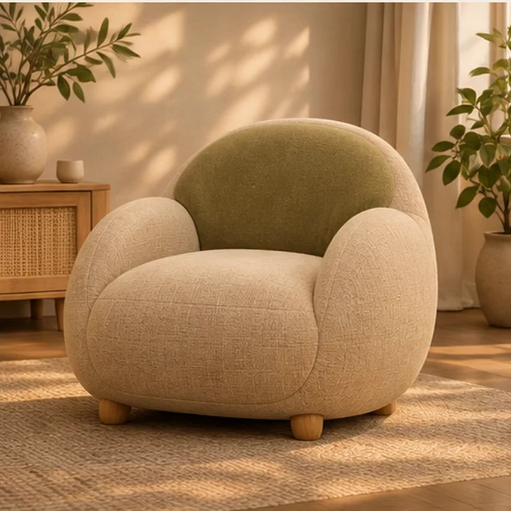

Pressure, posture and touch

THE TRANSFORMATION / 2032
VIEW THE TRANSITION · SIX MATERIAL STATES
The motion is the main view. Select a frame below to inspect a particular material state.
MEIY / LIVING / CONCEPT EDITION 2032
NEST
Responsive chair
A seat that listens to you.
Warm linen upholstery on a grounded timber frame. Soft cushions adjust around the sitter; broad tactile ribs emerge to make changing support visible and tangible.
₹12,900 2032 concept price
1
Material choices are speculative. Illustrations are not verified manufactured colourways.
01 / SIX MOMENTS OF CHANGE
A behaviour you can see.
All six stages preserve one object and one environment.
Soft neutral chair
The back senses a sitter
Subtle texture emerges
Support grows along the back
Side cushions ease inward
Chosen relaxation posture
02 / SIX DIMENSIONS
How NEST communicates.
Matches chosen support level
Texture and subtle material colour
Back and sides adapt
Sit, touch, request less support
Optional ambient coordination
03 / MATERIAL & CHARACTER
Familiar in form.
Different in behaviour.
Comforting but never restrictive.
- Natural woven linen appearance
- Responsive cushioning
- Stable timber supports
- Muted olive support surface

04 / A MOMENT IN 2032
A seat that listens to you.
As you sit, NEST slowly curves its back toward you. You choose how much support it offers; a touch releases the enclosure.
“If furniture can change how we sit, who decides when it should stop?”
05 / PEOPLE & PERSPECTIVES
Every object has a point of view.
What might people say about NEST in 2032? These are illustrative voices for the design-fiction world, not reviews from actual buyers.
2032 / SCENARIO RATING
4.3 / 5
★★★★★
3 imagined perspectives05 / KEEP EXPLORING